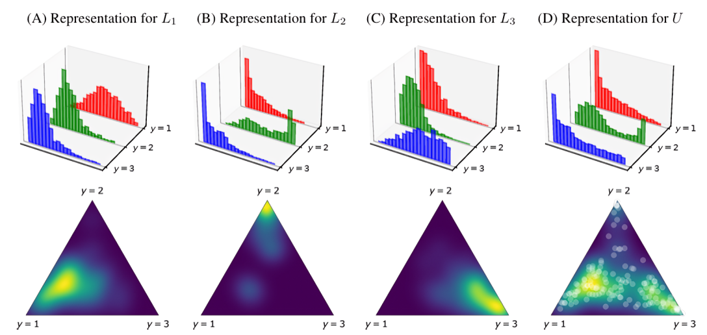

Kernel Density Estimation#
KDEy: Kernel Density Estimation y-Similarity#
KDEy is a multi-class quantification approach based on Mixture Models (Distribution Matching - DM) that proposes a novel representation mechanism to model the distribution of posterior probabilities (y-scores) generated by a soft classifier [1].
The Limitations of Histograms The core argument of KDEy is that traditional DM approaches relying on histograms are suboptimal in multi-class scenarios. Histograms tend to become specific to each class, losing the opportunity to model inter-class interactions that may exist in the data. Furthermore, binning strategies can lose critical information regarding the shape of the distribution [1].
The KDEy Solution KDEy resolves this by replacing discrete, univariate histograms with continuous, multivariate Probability Density Functions (PDFs) modeled via Kernel Density Estimation (KDE). These PDFs are represented as Gaussian Mixture Models (GMMs) operating on the unit simplex (\(\Delta_{n-1}\)), effectively preserving inter-class correlations [1].
For example, in a 3-class problem (\(L1, L2, L3\)), instead of using three separate histograms for each class’s posterior probabilities, KDEy models a single 2D density over the simplex defined by the three classes. This allows it to capture how the probabilities for different classes relate to each other.
{kind=link}

Illustration of KDEy modeling class-conditional densities on the probability simplex, figure from Moreo et al., 2023#
KDEy serves as a prefix for variants that fall under different optimization frameworks. Next , we describe the three main KDEy quantifiers described in [1].
The library provides three main variants of KDEy, depending on the optimization framework and the divergence function utilized.
KDEy-ML (Maximum Likelihood)#
The KDEyML class implements the Maximum Likelihood quantifier. It models class-conditional densities of posterior probabilities via KDE and estimates class prevalences by maximizing the likelihood of test data under a mixture model of these KDEs.
Mechanism: The mixture weights correspond to class prevalences, optimized under the simplex constraint.
Optimization: The method minimizes the negative log-likelihood of the mixture density evaluated at the test posteriors.
Relation to EM: This approach generalizes EM-based quantification methods by using KDE instead of discrete histograms, allowing smooth multivariate density estimation over the probability simplex.
Mathematical details - KDEy-ML Optimization
The optimization problem is solved over the probability simplex \(\Delta^{n-1}\):
Where \(p_{\tilde{L}_i}\) is the KDE model for class \(i\). The implementation uses constrained optimization (SLSQP) to ensure \(\sum \alpha = 1\) and \(\alpha_i \ge 0\).
Example
from mlquantify.matching import KDEyML
from sklearn.ensemble import RandomForestClassifier
# KDEy-ML uses Maximum Likelihood optimization
q = KDEyML(estimator=RandomForestClassifier(), bandwidth=0.1)
q.fit(X_train, y_train)
q.predict(X_test)
KDEy-HD (Hellinger Distance)#
The KDEyHD class estimates class prevalences by minimizing the Hellinger Distance (HD) between the KDE mixture of class-conditional densities and the KDE of the test data.
Stochastic Approximation: Since the Hellinger distance between Gaussian Mixture Models lacks a closed-form expression, this class uses Monte Carlo sampling and importance weighting to approximate the divergence.
Parameters: The precision of the approximation is controlled by the
montecarlo_trialsparameter.
Mathematical details - KDEy-HD Monte Carlo
The implementation approximates the HD integral using importance sampling. It precomputes reference samples from the class KDEs and weighs them by the ratio of the test density to the reference density.
The objective function calculated during optimization is:
Where \(p_\alpha\) is the mixture candidate, \(q_U\) is the test density, and \(p_{ref}\) is the density of the reference samples.
Example
from mlquantify.matching import KDEyHD
# Uses Monte Carlo sampling (default trials=1000)
q = KDEyHD(estimator=RandomForestClassifier(), montecarlo_trials=2000, random_state=42)
q.fit(X_train, y_train)
q.predict(X_test)
KDEy-CS (Cauchy-Schwarz)#
The KDEyCS class minimizes the Cauchy-Schwarz (CS) divergence.
Efficiency: Unlike Hellinger distance, the CS divergence between mixtures of Gaussians allows for a closed-form solution.
Mechanism: This mathematically efficient approach leverages precomputed kernel Gram matrices of train-train (\(B_{bar}\)) and train-test (\(a_{bar}\)) instances. This allows for fast divergence evaluation without the need for sampling, making it scalable for multiclass quantification.
Mathematical details - KDEy-CS Closed Form
The implementation minimizes the following objective derived from the CS divergence definition:
Where:
\(\mathbf{r} = \alpha / \text{counts}\) are the normalized weights.
\(\mathbf{a}_{bar}\) represents kernel sums between training centers and test points.
\(\mathbf{B}_{bar}\) is the Gram matrix of kernel sums between training centers.
Example
from mlquantify.matching import KDEyCS
# Fast execution using closed-form solution
q = KDEyCS(estimator=RandomForestClassifier(), bandwidth=0.1)
q.fit(X_train, y_train)
q.predict(X_test)
References